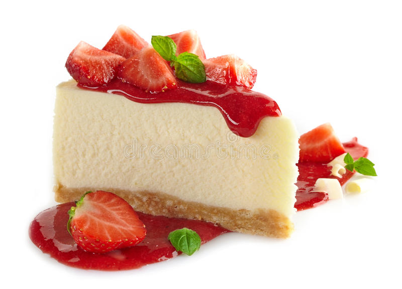

Cheesecake

Description
The cheesecake with a rich, creamy texture and cherry topping for a showstopping dessert that is also easy to make!
Ingredients:
- 6 MOROCHAS® Cookie Packages
- 1 Stick (90 g) Unsalted Butter
- 1 Stick (200 g) Cream Cheese
- 1/2 Can of NESTLÉ® Condensed Milk
- 4 eggs
- 3 Cups of Strawberries
- 1/2 Cup of Brown Sugar
Steps:
- Grind the Morochas cookies with a rolling pin. Mix the MOROCHAS cookies with the melted butter until you get a compact dough. Place in a 22 cm diameter mold and press towards the bottom until the whole mold is even. Cool for 20 minutes.
Stuffed
- In a bowl, beat the cream cheese with the NESTLÉ® Condensed Milk and mix well. Add the eggs one by one, continue beating until the mixture is smooth.
- Pour the preparation into the mold with the cookie base.
- Bake at medium temperature in a bain-marie for 50 minutes. To know if it is ready, insert a stick, which must be clean when leaving.
Strawberry jam
- In a pot, place the strawberries cut into quarters and the sugar. Cook over low heat for 15 minutes until thick.
- Unmold the cheesecake. Cover with the cold strawberry jam. Serve.
Return